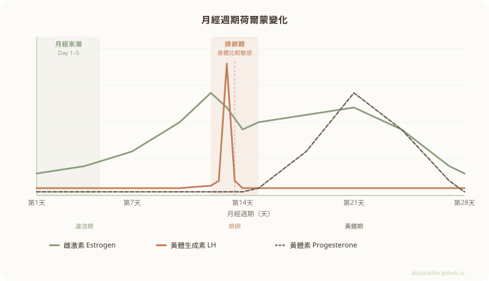

肚子突然有點熱熱癢癢的，掀開衣服看，整個驚呆
兩片局部發紅的雞皮疙瘩，皮膚凹凸不均、摸起來粗糙，轉身照鏡子，連手臂背部也有。我真的嚇壞了，因為在我有記憶以來，這種過敏現象屈指可數，上一次大概還是小時候的事。
雖然心裡一時難以接受，但也只能先冷靜下來想辦法緩解。
身體早就在說話，是我沒聽進去
靜下來回想，其實「警報」不是突然響起的，是一點一點鋪陳過來的
前天，臉上冒出兩三顆小粉刺。今天早上，出現好幾次瞬間抽痛的頭痛。然後，就是這片過敏。
這三件事對我來說都算稀有，我平時不太長痘、也不容易頭痛。這些線索讓我馬上聯想到生理週期，打開健康紀錄一看，果然～上次經期後的第13天，正值排卵期。
排卵期的身體，其實比你想像的更敏感
許多女生對生理期的各種症狀已司空見慣，但讓我們心煩的事，一個月可不只一次。
在月經週期的第11至14天前後，身體會迎來排卵，同時伴隨一波明顯的荷爾蒙變化：
| 荷爾蒙 | 排卵期變化 | 白話說明 |
|---|---|---|
| 雌激素 | 急遽上升，達週期高峰 | 這波高峰會觸發排卵，同時讓身體進入比較「敏感」的狀態 |
| 黃體生成素（LH） | 出現明顯高峰（LH surge） | 像是排卵的發令槍，約24–36小時後卵子釋出 |
| 促卵泡素（FSH） | 小幅同步上升 | 協助卵泡在最後階段成熟 |
| 黃體素 | 排卵前仍偏低 | 排卵後才會開始顯著上升，進入黃體期 |

其中影響最明顯的是雌激素的急遽上升。雌激素偏高時，免疫系統會進入一種比較「敏感」的狀態——對外來刺激的反應變得更強烈，原本不會有反應的東西，這時候可能就讓身體拉響了警報。
這也是為什麼有些女生會發現，排卵期前後特別容易皮膚癢、起疹子、或對某些東西過敏。不是心理作用，是身體真的在這個時間點比較容易被「觸發」。
沙漠、陽光、脫水、爬山——完整的過敏配方
我這兩天正在美國哈瓦蘇湖（Lake Havasu）旅行。這裡是沙漠地帶，空氣極度乾燥，一不注意補水，身體幾乎就在脫水邊緣；為了對抗強烈的紫外線，全身上了好幾層防曬油；還健行爬山了3到4個小時。
這些對我的身體來說都是新的挑戰：排卵期的免疫敏感、乾旱環境的脫水壓力、長時間紫外線曝曬、高強度活動帶來的身體負荷，種種因素疊加在一起，在我回到民宿放鬆之後，身體終於撐不住，用一場過敏告訴我它的極限在哪。
粉刺、頭痛、然後是全身蕁麻疹——
都是同一個故事，只是分幾章說完。
緊急處置和後來的事
當下先塗了朋友帶來的皮膚藥膏，做了冷敷，讓自己能好好入睡。隔天開始積極補水，補到回程路上一直在憋尿，非常痛苦🤣
飲食上也補回這幾天沒吃到的蔬果像是藍莓、蘋果，這些富含抗氧化成分的，還順便解決了我在沙漠地區遇到的排便卡卡問題。
回到洛杉磯休息的隔天，皮膚好轉許多、不再發癢，只剩零星紅點，排便也順暢，整個人輕盈了不少。那一刻真的又再次體會到——an apple a day keeps the doctor away，這句話此時超有感！
🧴 皮膚藥膏 + 冷敷——先讓發炎狀況穩定，幫助入睡
💧 積極補水——脫水是這次過敏的重要推手之一
🫐 補回蔬果——藍莓、蘋果等抗氧化食物，同時解決排便問題
🛌 好好休息——讓免疫系統有空間自我調節
以上是我個人當下的處理方式，如果過敏症狀嚴重（大面積紅腫、呼吸不適、快速蔓延），請立即就醫，不要拖。
關注自己的身體，是最好的健康管理
這次的經驗讓我重新意識到，身體一直都在說話，差別只在於我們有沒有在聽。
過敏、痘痘、頭痛，這些單獨看起來好像無關緊要的小訊號，放在一起就是一張清晰的地圖——告訴你免疫系統正在承受壓力，告訴你現在的環境或狀態已經超出了身體的舒適範圍。
了解自己的週期、認識身體在不同階段的特性、在旅行或特殊環境下給予更多照顧，這些都是我們能為自己做的事。不需要變成醫生，但多一點自我觀察，至少能在問題變大之前，先接住它。
身體每天都在給你訊號。過敏了，就會想是不是吃了什麼、碰了什麼，又或者是不是最近免疫力比較弱？了解自己的身體，才有辦法對症下藥。當然，必要的時候，還是要尋求專業醫療的協助。